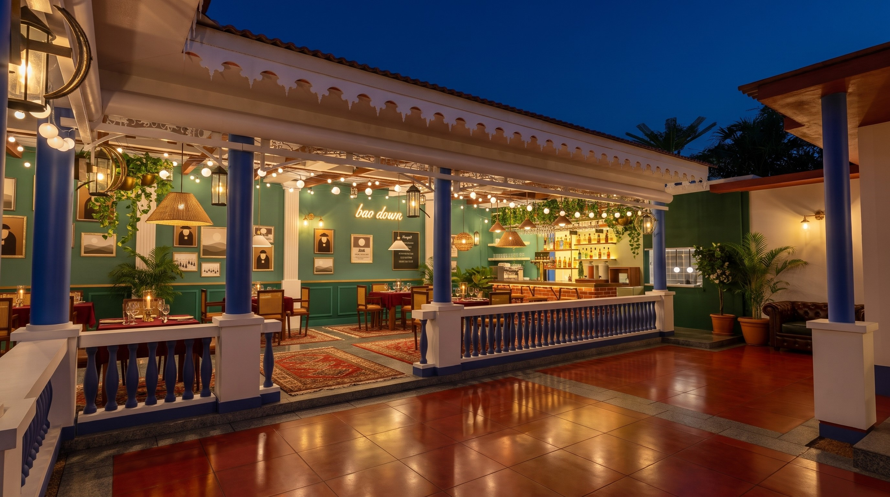
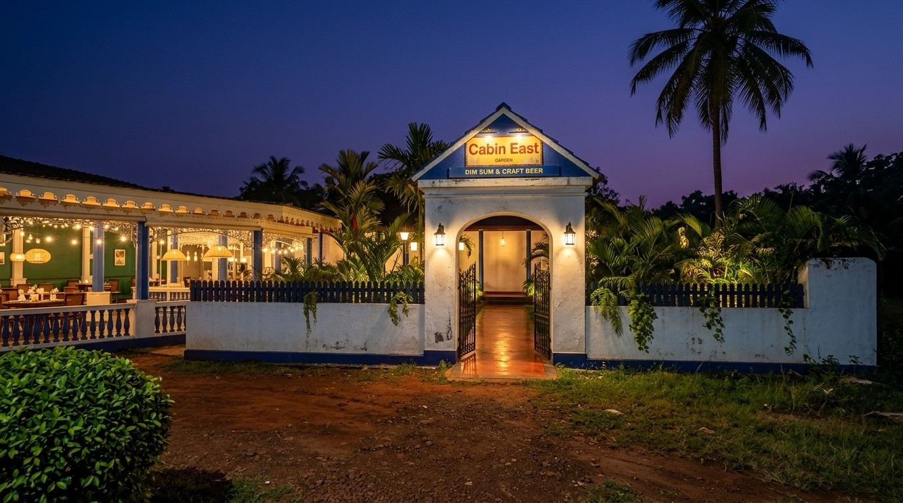
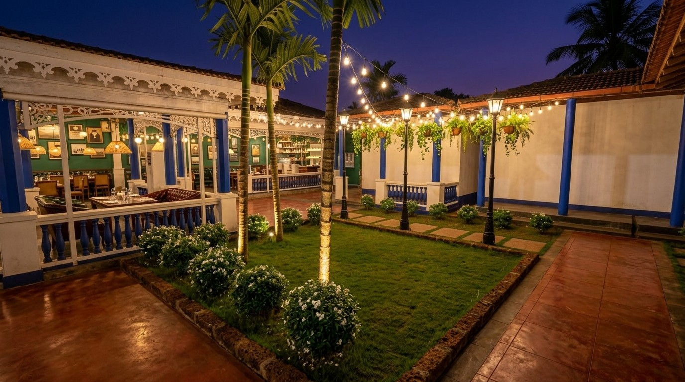
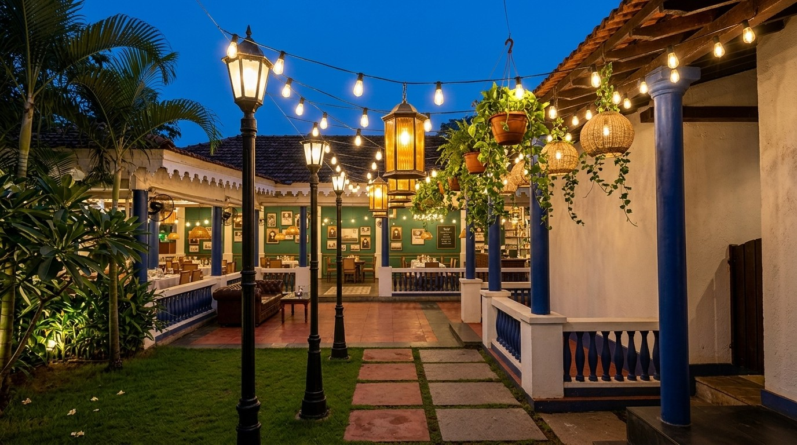
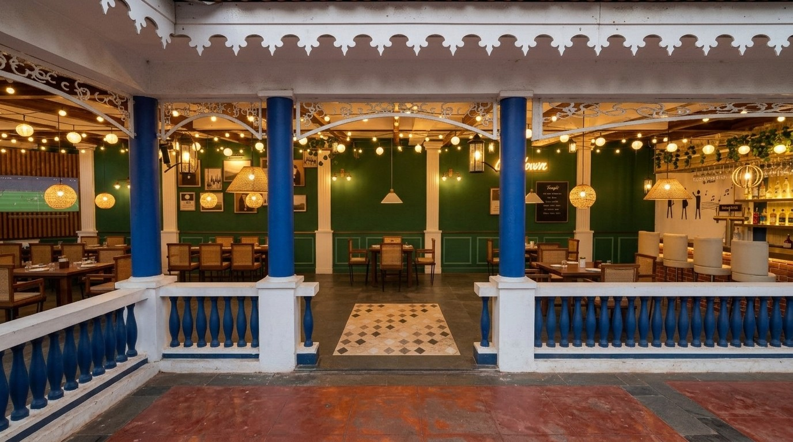
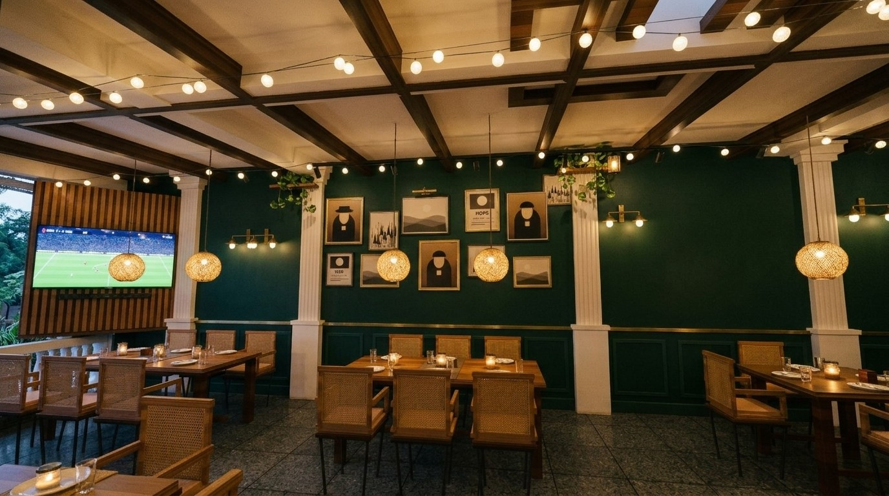
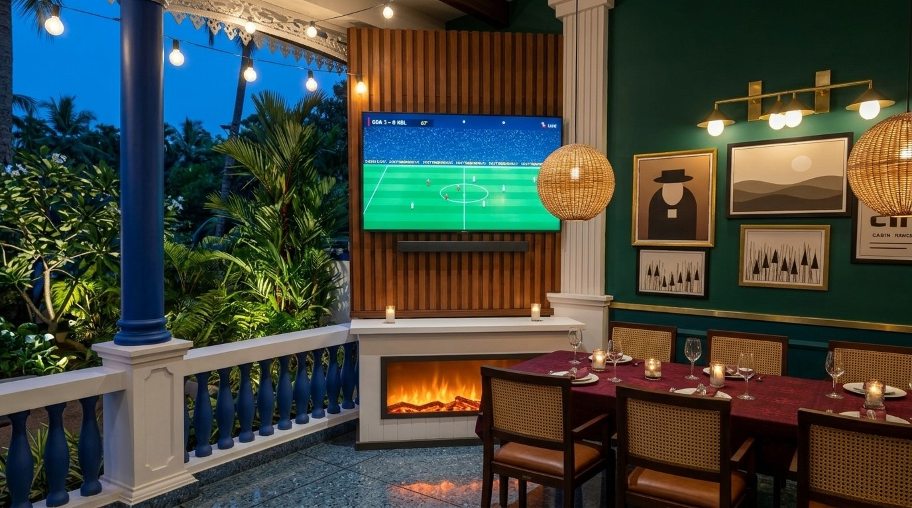
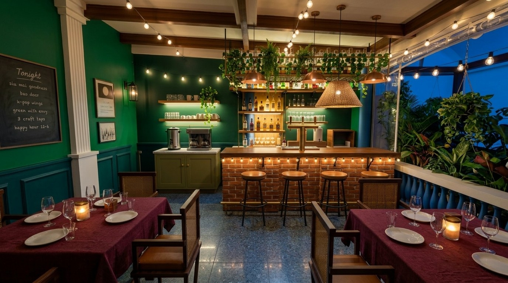
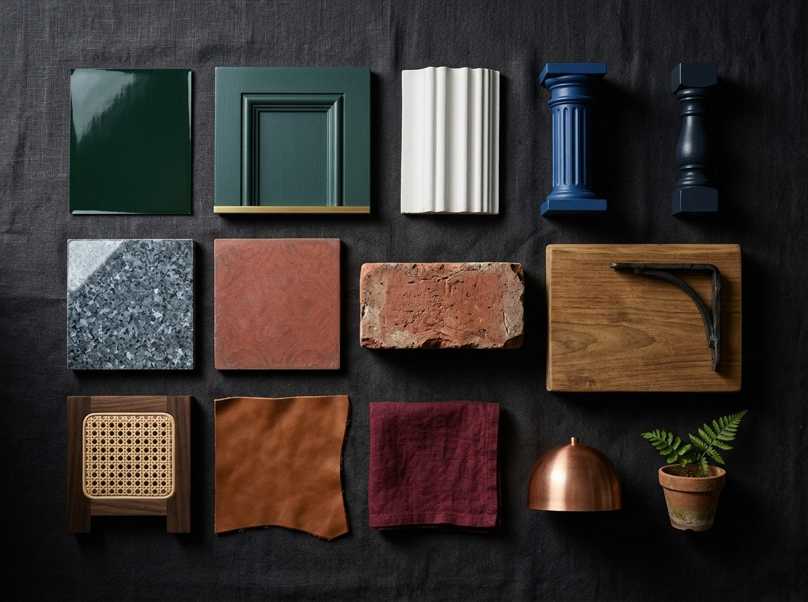

A dark, warm, premium look for the Garden at night, in the spirit of the inspiration boards: low pools of brass and candle light, deep green, polished teak and lush planting. It is built on the updated 3D model of the site as it stands: the blue columns and navy balustrade, the white fretwork and fleur-de-lis eaves, the coffered white ceiling and the brick bar all stay. The new layer is a two-tone wall (bottle green over deep teal-green panelling that hides the old tiles), warm brass and jute light, walnut and cane chairs with cognac seats, burgundy linen on the tables, a garden-style bar with a coffee station and a fireplace under the TV, and a lit path from the gate to the door. Every render keeps the model's layout; only the finishes change.


The gateway is the first thing anyone sees from the road. Keep its Goan whitewash and blue gable and make it glow after dark.
| Gateway | Fresh lime-white on the arch and piers, the gable repainted in the column blue, white cornice picked out |
|---|---|
| Sign | Cabin East board in the gable, lit by two small brass picture lights; the blue strip below for "Dim sum & craft beer" |
| Gates | Black wrought iron, kept open in service hours; two black wall lanterns either side, 2700 K |
| Wall | Whitewashed compound wall with the navy picket rail, warm uplights at the palms behind it |

The first green you walk past after the gate. Keep it simple and lit: lawn, palms and white flowers, with the festoon canopy and the hall glowing behind.
| Planting | Lawn in a laterite kerb, three areca palms, white frangipani and jasmine, a clipped hedge along the hall and the main path |
|---|---|
| Light | Warm spike uplights at each palm, a few low lanterns in the grass, 2200 K, IP67 |
| Edge | Laterite kerb and the black lamp posts of the approach path on its far side |

Turn left past the garden onto the narrow path. A canopy of festoon strings from the three lamp posts to the balcony roof, with brass lanterns, jute globes and planters among them, turns it into a lit walk.
| Festoon | Edison-bulb festoon strings every 50 cm from the lamp posts to the edge of the existing restaurant's balcony roof, two more crossing diagonally, bulbs every 38 cm, on stainless catenary wire |
|---|---|
| Lights | The two hanging lights from the Simplex pub: hexagonal brass lanterns with ribbed amber glass, and woven jute globes with ivy up the rope, IP65, 2200 K |
| Planters | Terracotta hanging bowls with trailing pothos, string-of-pearls and ferns, on drip trays |
| Clearance | Everything hangs 2.1 m or more above the path |
| Garden | Lawn, areca palms, white frangipani and a low hedge; warm spike uplights at the palms |

The front of the hall is already handsome: blue columns, a navy balustrade and white fretwork. The decor only warms it up.
| Landing | Red-oxide floor re-polished, grey kota border; two large terracotta pots with areca palms at the opening |
|---|---|
| Columns | Repaint in the existing blue, gloss; jasmine trained up two of them on stainless wire |
| Eaves | White fleur-de-lis valance and arched fretwork panels freshened in lime white |
| Door | Kilim runner in the 1.70 m opening; clear PVC curtains on every open side for the monsoon |

The one solid wall carries the pub character. The old tiles are covered, not broken out, and the white pilasters stay as the frame for each bay.
| Chairs | Dark walnut frames and legs, woven cane backs, cognac leather-look seat pads in marine-grade vinyl |
|---|---|
| Tables | Heavy burgundy cotton-linen tablecloths with a tone-on-tone damask, candles and fine glassware |
| Tiles | Hidden behind WPC panelled wainscot on battens, 1.0 m high, raised panels about 75 cm wide, painted deep teal-green (close to Farrow & Ball Studio Green No. 93 or Asian Paints Midnight Forest); a slim brass rail between it and the bottle green above |
| Wall | Two-tone: bottle-green matt above, anti-fungal; test the sample at night under 2700 K before buying |
| Pilasters | Existing white fluted pilasters kept and freshened |
| Art | Frames in every bay: a large salon hang in the middle and smaller groups of gilt and black frames under the sconces; brass picture lights, trailing pothos and ferns on timber shelves |
| Ceiling | Existing white coffers and dark false-beams kept; festoon lights under them |
| Floor | Existing blue-grey granite |

One screen only, set exactly on the diagonal where the long wall meets the open side, so it faces the whole west half of the room.
| Screen | 65 in, slim black, on a tilting arm; centre about 1.95 m, bottom about 1.55 m |
|---|---|
| Panel | Slatted dark teak closing the corner from the wall to the corner column, cables run inside it |
| Sound | Slim soundbar under the screen |
| Fireplace | Linear LED log-effect electric fireplace (about 1.2 m) in a white mantel console under the TV, candles on the mantel; flame effect only, no real heat needed in Goa |

The bar is the hero of the room, styled like a garden bar: the brick base kept and sealed, a thick teak top on iron brackets with lights along its edge, low copper pendants, and a bottle wall on a green wall behind. To its left, against the green wall, is a coffee station.
| Counter | Existing red brick, cleaned and sealed with a matt sealer; brick pilasters on the front, brick pier at the open side |
|---|---|
| Top | Thick warm teak, 60 mm, on black wrought-iron brackets; a string of small warm Edison bulbs along the front edge; brass foot rail |
| Taps | One brass font with three craft taps |
| Back bar | Behind the counter: a bottle wall of two chunky teak shelves on iron brackets packed with wine, whisky and gin, lit from below; backlit shelves, cooler, glass-washer, ON TAP board |
| Coffee station | Olive-green panelled cabinet with brass knobs and a white marble top: a twin filter-coffee brewer with glass carafes and a stainless hot-water urn; two floating oak shelves lit underneath for glasses and cups; a brass rail with a linen towel and a trailing pothos |
| Above | Low copper dome pendants and rattan lanterns over the counter; floating brass glass rack with trailing ivy |
| Stools | Four stools with round teak seats on black iron frames with footrings |
| End wall | The old white mural wall painted bottle green to the ceiling, with the same deep teal-green panelling below |

The hall is open on three sides, so everything here gets monsoon humidity and salt air.